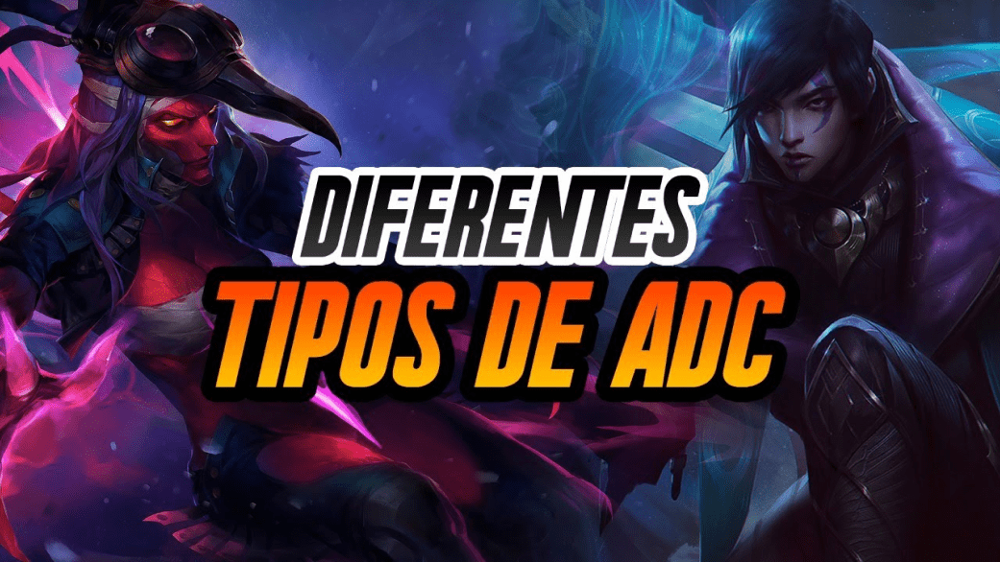

adcarry guide
Kiteo

¿Qué es el kiteo?
El kiteo es aprovechar el tiempo de recarga del auto ataque de tu campeon para moverte, ya que en ese lapso no puedes hacer daño.
¿Para qué sirve?
Sirve para que sea más dificil que el enemigo logre alcanzarte, ya sea con ataques básicos (si es melee) o con habilidades. Saber kitear o no puede ser la diferencia entre ser un buen adc o uno pésimo, ya que si no sabes kitear es muy dificil que puedas posicionarte bien a la hora de tradear o en las teamfights.
Configuración de kiteo
En el siguiente video voy a mostrar como configurar las teclas para poder kitear de la manera más óptima.
Practicar el kiteo
En el siguiente video voy a mostrar como practicar el kiteo, para que puedas llevarlo a tus partidas.
Tipos de adc
Para poder jugar correctamente adc, primero hay que saber cual va a ser tu rol dentro de la partida, y eso depende mucho de que clase de tirador estes jugando.
Utilidad
La función de este tipo de adc es ser útiles para el equipo, como indica su nombre, ya que tienen habilidades que les permiten iniciar una pelea facilmente, hacer disengage de una pelea o simplemente pueden buffear al team con curaciones y escudos. Suelen pickearse cuando el equipo tiene daño suficiente para las peleas en equipo, pero no tiene utilidad. Los siguientes campeones son adc de utilidad:
Hipercarrys
Este tipo de adc suele brillar en el juego tardio y si se feedean pueden carrear la partida solos, pero en el juego temprano suelen sufrir mucho, por lo que necesitan de soportes que puedan hacerle peel, para que puedan escalar. Los siguientes campeones son adc hipercarrys:
adc casters
Este tipo de adc dependen principalmente de sus habilidades para meter la mayor cantidad de daño, por lo general son skill shots. Esto no quiere decir que no tengan que usar sus ataques básicos, todo lo contrario. Los siguientes campeones son adc casters:
adc de asedio
Este tipo de adc son campeones que tienen muchisima limpieza de oleadas y usan sus ataques basicos y/o habilidades para desgastar al enemigo, para que este no pueda pelear. Los siguientes campeones son adc de asedio:
Adc de early/mid game
Estos campeones suelen ser muy agresivos en la fase de lineas y si salen bien en ella su mid game es muy fuerte, pero si les va mal en el early no van a poder hacer nada en toda la partida. Por eso deben intentar cerrar el juego lo más rápido posible. Los siguientes campeones son adc de early/mid game:
Adc de mid/late game
Estos campeones requieren de farmear todo lo posible en la fase de lineas e intentar sobrevivir. Si conseguiste tener una buena fase de lineas vas a ser imparable. Los siguientes campeones son adc de mid/late game:
Adc buenos en todas las etapas
Los siguientes campeones son adc buenos en todas las fases del juego:
Posicionamiento
El posicionamiento del adc es la clave para ganar las peleas en equipo, ya que es el encargado de meter la mayor cantidad de dps (daño por segundo) posible, y si muere al comienzo de la pelea, el equipo no va a poder hacer nada. Por eso en el siguiente video voy a explicar como posicionarse.
Itemización
En la página de avanzado ya expliqué la tienda y los objetos de manera general, y ahora voy a explicar de manera detallada los items que se suelen armar los adc.
Wardeo
Muchas veces se suele decir que wardear depende unicamente del soporte y esto es completamente falso. El soporte es quien más debe wardear, pero no es el único. Por eso voy a explicar como debe ayudar con la visión el adc.
Triangulación